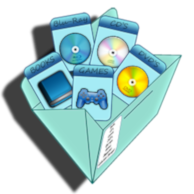

<div class="layout-topbar">
    <a class="layout-topbar-logo" routerLink="">
        
        <span>Collection manager</span>
    </a>

    <a class="p-link layout-menu-button layout-topbar-button" href="#" (click)="appMain.toggleMenu($event)">
        <i class="pi pi-bars"></i>
    </a>

    <a class="p-link layout-topbar-menu-button layout-topbar-button" href="#" (click)="appMain.toggleTopMenu($event)">
        <i class="pi pi-ellipsis-v"></i>
    </a>

    <div class="layout-topbar-menu" [ngClass]="{'layout-topbar-menu-mobile-active':appMain.topMenuActive}">
        <a href="#" class="p-link layout-topbar-button">
            <i class="pi pi-cog"></i>
            <span>Settings</span>
        </a>
        <a href="/pages/profile" class="p-link layout-topbar-button">
            <i class="pi pi-user"></i>
            <span>Profile</span>
        </a>
    </div>
</div>
